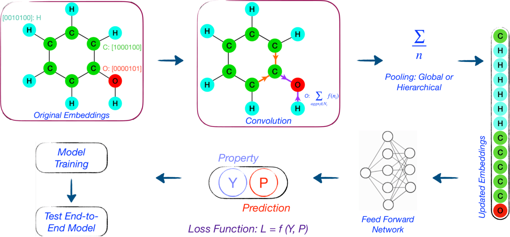
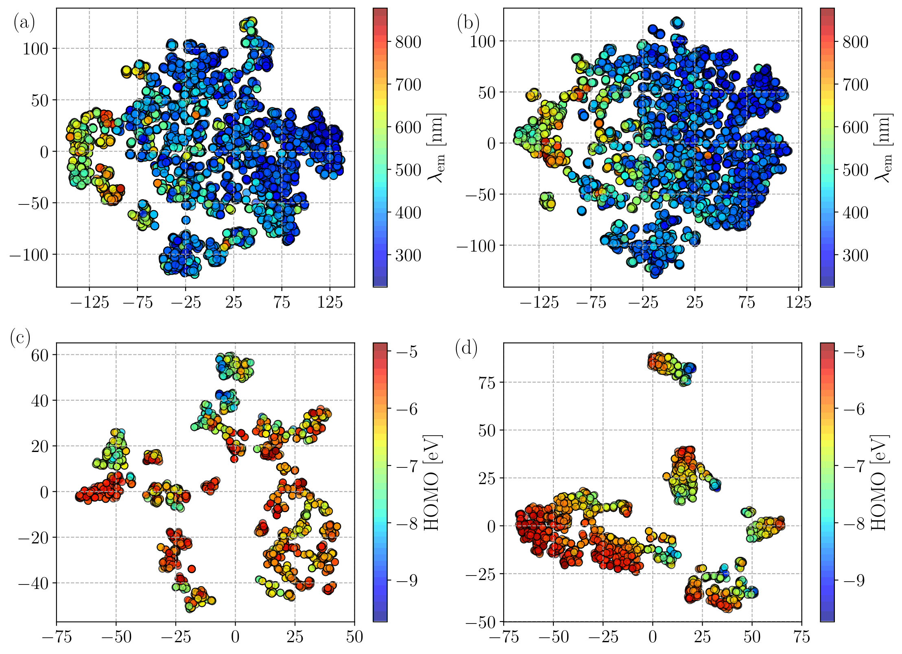

AI based models are opening up a new paradigm in the space of molecular design and discovery. Graph neural networks allow us to encode molecular structures in the form of nodes and links, which are embedded into vectors, allowing structure-property correlations to be established directly. Graph convolution networks (GCN) have been developed, whereby a convolution layer processes the structure vectors before a second convolution layer learns the correlation with target values. A special case known as Graph Attention Networks (GAT) further refine the processing of structural vector by modifying its embeddings based on weighing the interactions between graph nodes, and hence virtually between different atoms. GAT based models have been shown to predict orbital energy of molecules with high accuracy, but GAT predicting general properties of molecules from structure have not been developed. We developed a GAT model that can predict both energy and optical properties of molecules, including excited state properties, by implementing a hierarchical pooling of processed data into the neural network workflow. We also explored the significance of the different mechanisms of GAT and GCN, and its impact.
Structural information was extracted from SMILES strings of molecules in datasets and used to form one-hot embeddings, which are vectors that contain information about the molecule in binary form. Target properties included ground state and excited state energies of the molecules, and optical properties such as absorption wavelength. GCN and GAT were each set up as two convolution networks in series, with the first one modifying the values in the one-hot embeddings as input to the second layer. The GAT modified the connections between atoms in a weighted form, thereby identifying the atomic interactions that more strongly influenced molecular properties. The GAT achieved a higher accuracy in prediction of all properties. The accuracy of predicting excited state properties was enhanced significantly when a hierarchical pooling was implemented. We found that GAT was more capable of identifying structural features that correlated with ptoperties. As apparent in tSNE plots below, GAT tended to process structural vectors and form more closed clusters of molecules with similar properties. This illustrates the advantage mechanism of GAT has over GCN.
